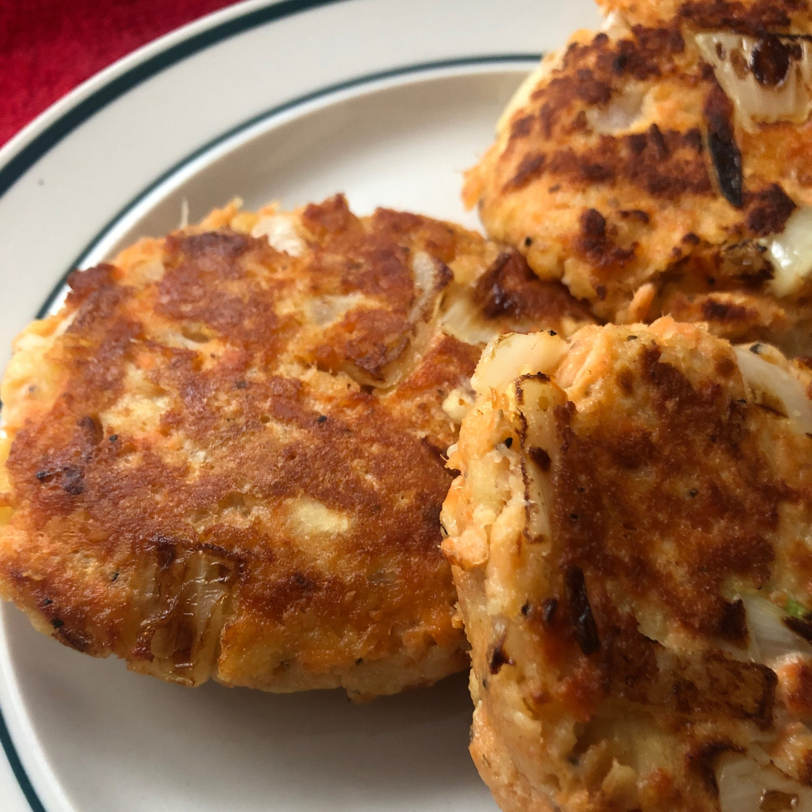

Salmon Patties

Description
Salmon Patties – quick to prepare, golden and crispy on the outside,
moist and savoury on the inside with lovely big flakes of salmon!
These are Can’t-Stop-Eating-Them good!
A very easy salmon cakes recipe that can be made with either canned salmon
OR fresh salmon.
Ingredients
- 1 (14.75 ounce) can canned salmon
- 1 egg
- ¼ cup chopped onion
- ½ cup seasoned dry bread crumbs
- 1 tablespoon olive oil
Instructions
- Drain and reserve liquid from salmon. Mix egg, onion, bread crumbs and salmon together.
- Make into patties. If mixture is too dry to form into patties, add reserved liquid from salmon.
- In a frying pan, heat olive oil. Place patties in pan. Brown on each side, turning gently.
- Drain on paper towels and serve.